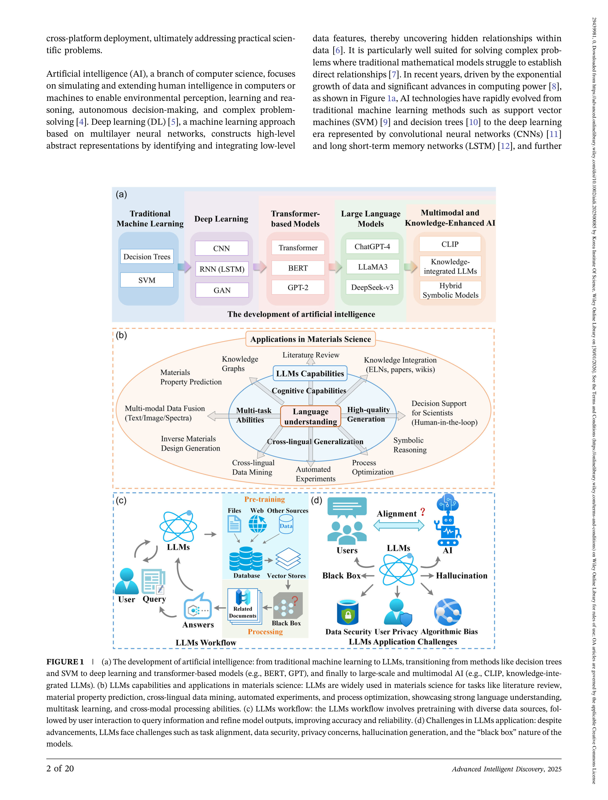

Figure 1
재료과학에서 LLM의 4가지 핵심 역할(Oracle, Surrogate, Quant, Arbiter)을 정의하고, 검증 가능하고 추적 가능한 연구 루프에 LLM을 통합하기 위한 전략적 방향을 제시하는 관점(perspective) 논문이다.
LLM이 자연어 이해, 멀티모달 정렬, few-shot 추론 등에서 강력한 능력을 보여주며 재료과학의 물성 예측, 합성 계획, 불확실성 정량화에 잠재력을 입증하고 있다. 그러나 단순히 모델 크기를 키우는 것만으로는 충분하지 않으며, 이러한 능력들을 검증 가능하고 추적 가능한 루프(verifiable, traceable loop)로 통합할 때 진정한 가치가 발생한다. 데이터 이질성, 해석 가능성 부족, 환각 제어, 과학적 태스크와의 불일치 등의 근본적 도전 과제를 해결하기 위한 체계적 프레임워크가 필요하다.
관점(perspective) 논문으로서 체계적 리뷰보다는 저자들의 분석과 비전을 중심으로 구성된다.
Oracle/Surrogate/Quant/Arbiter라는 4가지 역할 분류는 LLM의 재료과학 활용을 개념적으로 정리하는 데 효과적인 프레임워크다. 특히 "모델 크기 확장보다 검증 가능한 시스템 통합이 더 중요하다"는 메시지는 현재 AI 과잉 기대 속에서 의미 있는 관점이다. 다만 관점 논문의 한계로 구체적 구현이나 정량적 검증이 없어, 제안의 실현 가능성은 후속 연구에 의존한다. 3가지 전략 방향(도메인 적응, 데이터 인프라, 추적 가능 루프)은 방향성으로는 타당하나, 각각이 독립적인 대형 프로젝트 수준이어서 실행 우선순위나 로드맵이 추가로 필요하다. 재료과학 LLM 연구의 전략적 사고를 촉진하는 데 기여하는 논문이다.
총평: LLM의 역할을 Oracle/Surrogate/Quantifier/Arbiter 4가지로 분류한 재료과학 관점 프레임워크로 개념적 정리에 기여한다.